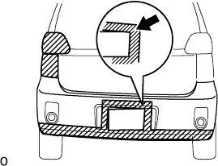

Remove the rear bumper |
| 1. License plate lamp ASSY is removed |
 |
Insert a flathead driver into the position of the figure, move it in the direction of the arrow in the figure, and remove the claw.
Cut the connector and remove the license plate lamp ASSY.
| 2. Remove the rear banpa cover (license plate standard) |
 |
Put a protective tape around the license plate and the quota panel.
Use the clip resover to remove the clips of the lower part of the rear ban cover and two side portions.
Use two rear bump cushions using a torque wrench (T30).
Remove the claws of the rear bump side part.
Lift the rear bang parcover and pass the upper side of the license plate from the bumper opening.
Remove the screws and clips, and remove the rear bumpside retainer LH, the rear vamp sidriter RH, the rear pampaside support LH, and the rear pampaside support RH.
Remove the two clips and remove the rear bump side seal LH and the rear bump side seal RH.
Remove the nut and remove the reflex recked.
| 3. Remove the rear banpa cover (license plate -shaped light type) |
 |
Put the protective tape on the license plate, the lower part of the rear banpa cover and the quota panel.
Use the clip resover to remove the clips of the lower part of the rear ban cover and two side portions.
Use two rear bump cushions using a torque wrench (T30).
Remove the claws of the rear bump side part.
|  |
Lift the rear banpa cover and make the rear banpa cover diagonally (top up).
Pass the upper right of the license plate from the bumper opening.
Make the rear banpa cover further diagonally.
 |
Remove the rear vampo cover diagonally, dent the upper side of the license plate and pass through the bumper opening.
Lower the rear vampo cover further and pass the bottom of the license plate from the bumper opening.
Remove the screws and clips, and remove the rear bumpside retainer LH, the rear vamp sidriter RH, the rear pampaside support LH, and the rear pampaside support RH.
Remove the two clips and remove the rear bump side seal LH and the rear bump side seal RH.
Remove the nut and remove the reflex recked.